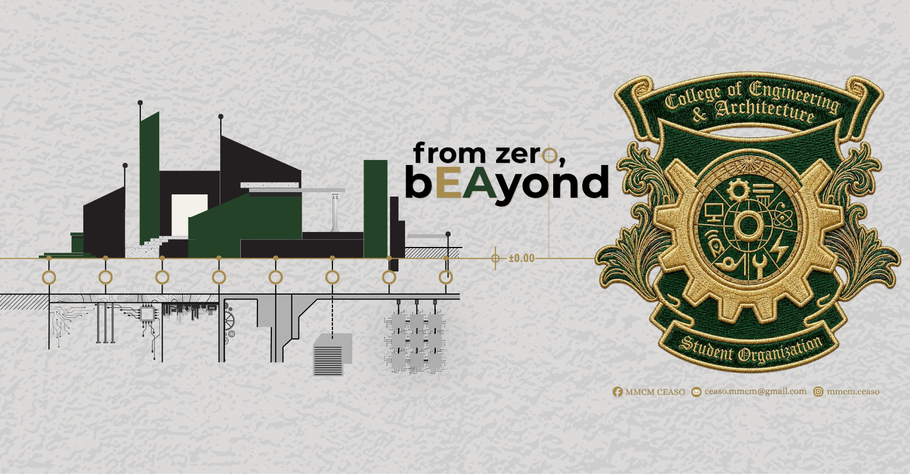

Malayan Colleges Mindanao
Excellence and Relevance
Mapúa MCM, established in 2015, is a branch that brings Mapúa University’s legacy of technological and academic excellence to Mindanao. The institution officially commenced operations on July 2, 2018, followed by its formal inauguration ceremony on July 7, 2018.
College of Engineering and Architecture

The College of Engineering and Architecture (CEA) transforms its graduates into globally competitive, innovative leaders, socially responsible, and result-oriented engineers and architects. MapúaMCM-CEA commits to educating students imbued with good moral and ethical values while engaging in economically viable research and innovation that is relevant locally and beyond. This commitment is evident in the college programs offered by this prestigious institution, which stands out among the top colleges in the Philippines.